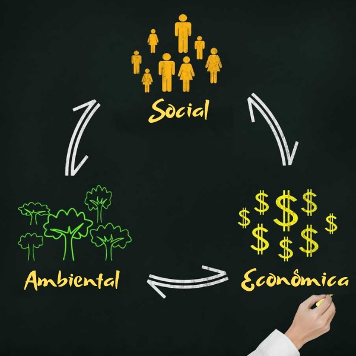

Sustentabilidade econômica é um conjunto de praticas econômicas, financeiras e administrativas que visam o desenvolvimento econômico de um país ou empresa, preservando o meio ambiente e garantindo a manutenção dos recursos naturais para as futuras gerações. É a capacidade de produção, distribuição e utilização imparcial, ou seja, ser justo em relação as riquezas produzidas pelo ser humano. O crescimento econômico sustentável refere-se a um ciclo de crescimento econômico constante e duradouro, é uma situação em que a produção cresce, em termos reais, isto é, descontada a inflação, por um período relativamente longo (mais de duas décadas).
